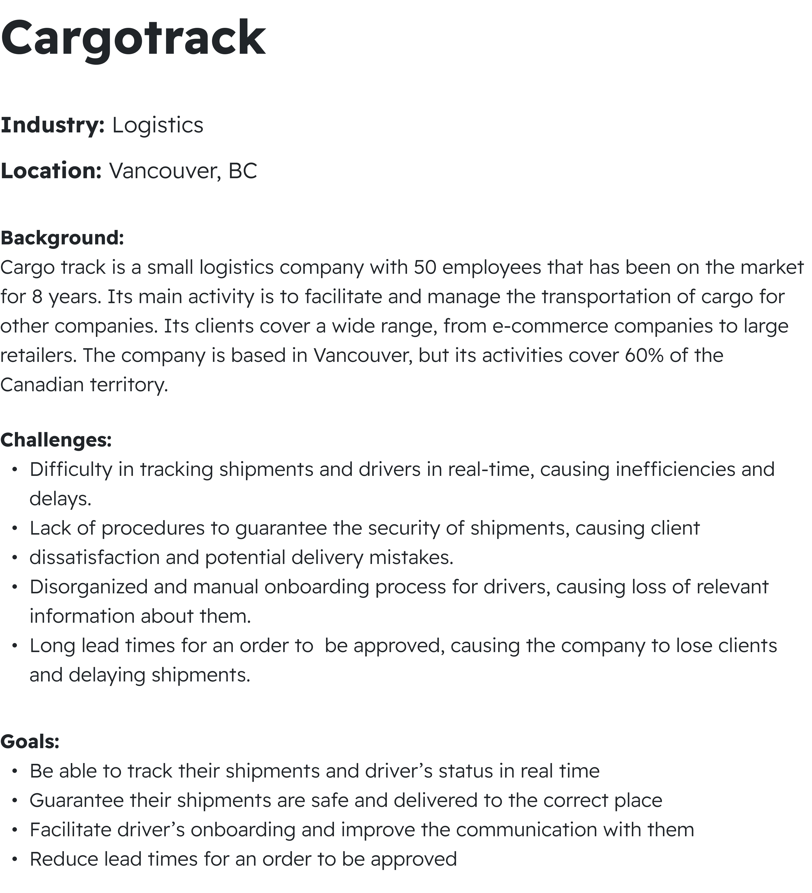
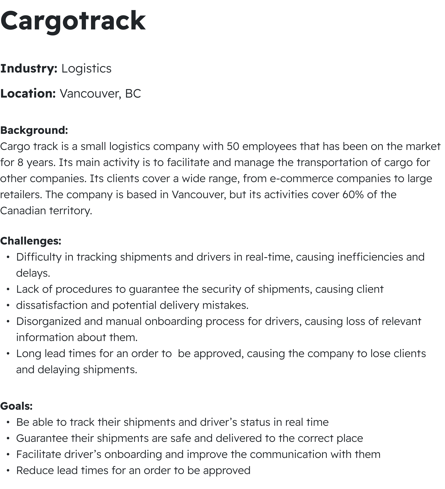

Description
PrepUp is a mobile app that prepares you for interviews in your field of study. The app offers a wide range of interview questions with analytical feedback, AI-generated questions tailored to users' preferred job roles, and access to text-based questions through a STAR MAster tool for practice on the go. PrepUp empowers job seekers to prepare smarter, faster and better.
Opportunity
We are targeting the EduTech, JobTech and HRTech sectors, targeting job applicants who often struggle with engaging in conversational dialogue during interviews.
Our aim is to empower applicants by addressing common challenges they face during job interviews and in the job search process. In our research, we identified four main challenges that applicants are currently encountering.
Many job seekers struggle to find tailored interview practice materials that suit their specific industry, resulting in spending time on irrelevant subjects.
Job listings for similar roles often have different titles and requirements, which makes it difficult for them to identify the best positions to apply for.
Difficulty to find the right questions and study materials for his field.
Solution
PrepUp, a mobile app that prepares users for interviews in their field of study. The app offers a wide range of interview questions with analytical feedback, AI-generated questions tailored to users' preferred job roles,and access to text-based questions through a STAR Master tool for practice on the go. The main objective of this app is to improve communication skills and prepare their answers for the interview questions to increase hiring chances for desired job positions. Additionally, users can explore job listings and allow them to understand specific requirements and start practicing for those roles.
Main Features
01
Interview Simulator
The Interview Simulator uses the mobile device's microphone and speaker to provide interactive, real-time practice in which users answer to AI-generated questions in a simulated interview scenario. It uses speech to text recognition to evaluate and deliver quick feedback,allowing users to refine their replies.
Job Finder
The Job Finder feature leverages the mobile device's connectivity to job portals, enabling users to search for specific job roles effortlessly. By accessing the internet, users can explore job listings, view detailed requirements and qualifications, and tailor their search based on their professional profile. This functionality allows users to seamlessly gather relevant information about particular job opportunities and then begin practicing for interviews specific to those roles.
02
03
S.T.A.R Master
The S.T .A.R. Master feature leverages the mobile device's touchscreen and keyboard to present users with random situation-based interview questions that prompt them to describe specific experiences using the S.T .A.R. (Situation, Task, Action, Result) method. Users can interactively select questions and input their responses,allowing for a dynamic practice experience.
Competitors

Personas
 

User Flow